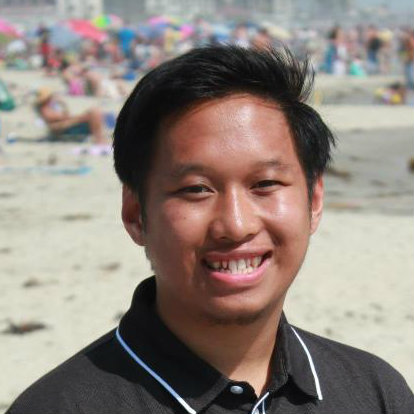
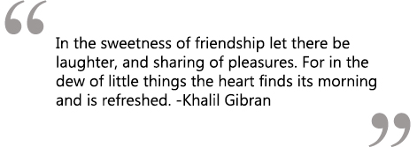

Treasurer: Ian Custodio


Nicknames: Douglas (stomach)
Year: Sophomore
Major: Computer Science
Favorite childhood movie? Aladdin - I thought they were the only Filipino Disney characters, until my mom told me they're Indian. Still liked it.
If you were a certain type of food, what would you be? Chicken Alfredo Pasta; they say you are what you eat. Favorite pasta dish.
Most Visited Websites: telebears.berkeley.edu Apparently, I keep getting locked out and have to email them to let me log-on some more.
What do you see yourself doing after college? I am hoping to get a decent-high paying job related to computer science. Probably a software engineer. But before that, I want to travel all over Europe!
What do you like to do on your free time? Watch Netflix and TV! Favorite TV shows: Big Bang Theory, Friends, Modern Family, How I Met Your Mother, Glee, The Office, Naruto, Fresh Prince of Bel-Air
If you had one song to describe you as a person, what would it be and why? "No Such Thing" - John Mayer
Just because I miss high school, high school friends, and San Diego right now :/
If you had 24 hours to live, what would you do? Buy a flight ticket to Barcelona and view as much as Europe as I can!